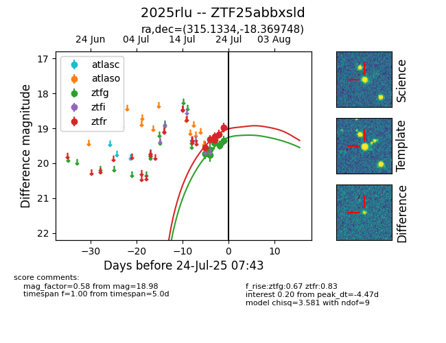

Target ZTF25abbxsld at 2025-07-23 11:52, see:
FINK: fink-portal.org/ZTF25abbxsld
Lasair: lasair-ztf.lsst.ac.uk/objects/ZTF25abbxsld
ALeRCE: alerce.online/object/ZTF25abbxsld
TNS: wis-tns.org/object/2025rlu
YSE: ziggy.ucolick.org/yse/transient_detail/2025rlu
alt names
ZTF25abbxsld (ztf,fink)
2025rlu (tns,yse)
coordinates:
equatorial (ra, dec) = (315.1334,-18.36975)
galactic (l, b) = (29.4087,-36.49206)
photometry
last ztfg=19.48, ztfr=19.17
6 ztfg, 5 ztfr detections
